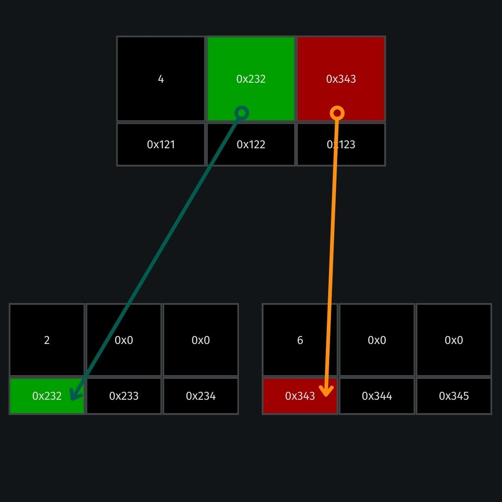

Back to pages
Tries - Aplicação de busca binária em nós listados
"Em ciência da computação, uma trie, ou árvore de prefixos, é uma estrutura de dados do tipo árvore
ordenada, que pode ser usada para armazenar um array associativo em que as chaves são normalmente cadeias de
caracteres."
wikipedia
Vamos falar um pouco sobre tries, o que são, para que servem, como implementá-las e, por fim, um exemplo.
Partindo de árvores binárias:
Uma tri (do inglês retrieval) é uma forma de hashing em notação Big O constante.
Uma tri é uma árvore, onde cada um de seus nós é um array. Como assim?
Pense em como uma árvore binária é representada:
typedef struct node // nó
{
int number; // valor do nó, definimos que será um número inteiro
struct node *left; // aponta para um nó à 'esquerda'
struct node *right; // aponta para um nó à 'direita'
}
node;
Com isso, podemos imaginar como seria uma árvore binária com raíz sendo 4, apontando para filhos 2 e 6, por
exemplo, da seguinte maneira:

Caso você não esteja familiar, apenas saiba que o primeiro quadradinho com o número representa o valor de number. Logo abaixo dele, 0x121 representa o endereço deste valor na memória. Imediatamente ao lado dos valores, existem dois quadrados em sequência: o left e o right. Cada um deles tem como valor o endereço do número para o qual apontam (2 e 6, respectivamente).
Note que os endereços são alocados aleatoriamente, foram dispostos aqui com valores arbitrários para fins de demonstração.
Uma árvore binária, no melhor dos casos (balanceada), terá procedimentos de busca na ordem de O(log n).
wikipedia
Vamos fazer uma pequena modificação na estrutura desta árvore, e usá-la para gravar nomes (limitaremo-nos aos caracteres minúsculos de a à z apenas, por simplicidade):
typedef struct node
{
char *letter; // um caracter
struct node *children[26]; // pointer para um node[array] de 26 espaços
}
node;